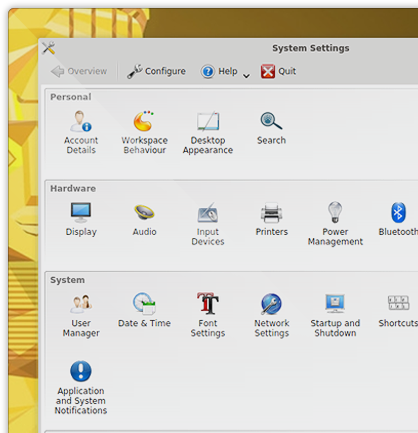

<div class="header"><h1 class="title">Customize</h1></div>


<div class="main">

<div class="content">
	<ul>
		<li>Netrunner is made of free software.</li>
	    <li>The new KDE Plasma 5 desktop is chosen for its easy of use.</li>
	    <li>It offers many options to customize in the simplified System Settings.</li>
	</ul>
</div>

</div>

